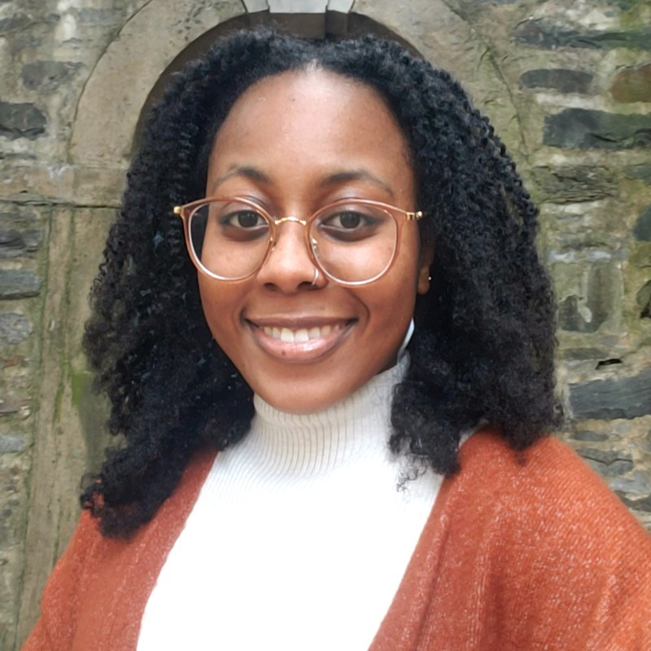

Jayla Williams

Summary
I am an operations professional with five years of experience in digital content management.
Experience
- Web Communications Assistant - National Academies of Sciences, August 2022 - Present
- Maintains the Unified Web Team's daily request intake system.
- Handles all streaming and video-related website requests, including uploading event recordings to Vimeo, updating video embeds, and minor video edits.
- Runs weekly reports to determine system health and analytics impact of title change requests.
- Membership and Operations Associate - Smithbucklin, August 2021 - March 2022
- Maintained quality customer service as the front-line contact to association client organizations and members.
- Produced electronic communications and digital marketing campaigns for upcoming client events and client membership renewals.
- Provided administrative and project support to the client and staff team, including database maintenance and reporting.
- Assistant Program Coordinator - Ceiba, November 2017 - May 2021
- Interfaced with clients in assisting with the tax preparation process.
- Investigated new client bases and assisted in developing outreach campaigns.
- Assisted in improving existing programs in addition to performing clerical tasks.
- Operations Manager - Carpe Global, November 2020 - February 2021
- Implemented training and assigned duties to associates.
- Communicated internship and volunteer expectations.
- Identified trends and determined opportunities to improve processes and execution.
- Content Editor - Carpe Global, November 2019 - October 2020
- Researched e-learning resources for Carpe Global’s online growing online database.
- Assisted in identifying the target audience for the resources provided on the website.
- Edited WordPress content entries and submissions of Carpe Global associates.
Education
- Bachelor of Arts, Global Studies - Temple University (2017 - 2021)
Skills
- Oracle CMS
- Wordpress
- MailChimp
- Microsoft Office
About Contact